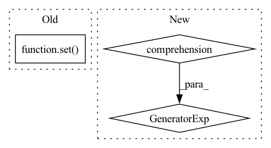

Pattern ID :16999
Before Change
if ref is not None:
u_ref = u[batch == ref]
u_others = [
u[batch == other] for other in set( batch.tolist()) if other != ref
]
batch_mmd = torch.stack(After Change
u_ref, pop_ref = self.get_mmd_inputs(u, batch, log_probs, self.hparams.batch_ref)
mmd = sum(
self .batch_correction_mmd(
u_ref, pop_ref, *self.get_mmd_inputs(u, batch, log_probs, other)
)
for other in self.other_batches
)
return kl, mmdIn pattern: SUPERPATTERN
Frequency: 4
Non-data size: 3
Instances Fragment ID: 57128388
Project Name: mics-lab/scyan
Commit Name: ac12bba948ee6c3aa2bc1a6dae7699929bfbf28d
Time: 2022-06-13
Author: quentin.blampey@student.ecp.fr
File Name: scyan/module/scyan_module.py
M Class Name: ScyanModule
N Class Name: ScyanModule
M Method Name: losses(5)
N Method Name: losses(6)
M Parent Class: pl.LightningModule
N Parent Class: pl.LightningModule
M File Name: scyan/module/scyan_module.py
N File Name: scyan/module/scyan_module.py
M Start Line: 192
M End Line: 220
N Start Line: 221
N End Line: 235
Before Change
entity_key = entity_to_entity_key(entity)
// we keep track of which entities have resolved mappings to specific parsers, so we don"t run lower
// ranked strategies if we don"t need to
resolved_parsers = self.resolved_parsers.get(entity_key, set() )
required_parsers = self._get_required_parsers(entity_key=entity_key, entity=entity)
if len(required_parsers.difference(resolved_parsers)) == 0:
logger.debug(After Change
f"<{entity.match}> "
)
strategy.prepare(document)
terms_to_consider = (
t for t in entity.syn_term_to_synonym_terms
if t.parser_name in unresolved_parsers
)
terms_by_parser = sort_then_group(
terms_to_consider, key_func=lambda x: x.parser_name
)
Fragment ID: 57128385
Project Name: astrazeneca/kazu
Commit Name: 0580447fb46d5fb37e27e8f7f2e3a0b6915c453e
Time: 2022-11-30
Author: RichJackson@users.noreply.github.com
File Name: kazu/steps/linking/post_processing/strategy_runner.py
M Class Name: NamespaceStrategyExecution
N Class Name: NamespaceStrategyExecution
M Method Name: __call__(4)
N Method Name: __call__(4)
M Parent Class:
N Parent Class:
M File Name: kazu/steps/linking/post_processing/strategy_runner.py
N File Name: kazu/steps/linking/post_processing/strategy_runner.py
M Start Line: 101
M End Line: 123
N Start Line: 99
N End Line: 120
Before Change
"end": span.end,
"text": match,
"taxonomy": sorted(
set(
(
mapping[0],
mapping[1],
)
for mapping in mappings
)
),
},
}
After Change
"end": span.end,
"text": match,
"taxonomy": sorted(
( mapping.source, f"{mapping.default_label}|{mapping.idx}")
for mapping in ent.mappings
),
},
} Fragment ID: 57128384
Project Name: astrazeneca/kazu
Commit Name: 4f44a945cc04e7bdb19ad299030def5f596bd6d5
Time: 2022-11-30
Author: richard.jackson4@astrazeneca.com
File Name: kazu/modelling/annotation/label_studio.py
M Class Name: KazuToLabelStudioDocumentEncoder
N Class Name: KazuToLabelStudioDocumentEncoder
M Method Name: _create_mapping_region(4)
N Method Name: _create_mapping_region(5)
M Parent Class: json.JSONEncoder
N Parent Class: json.JSONEncoder
M File Name: kazu/modelling/annotation/label_studio.py
N File Name: kazu/modelling/annotation/label_studio.py
M Start Line: 154
M End Line: 186
N Start Line: 87
N End Line: 100
Before Change
def cleanup(self, doc: Document):
for section in doc.sections:
section_ents = set( section.entities)
filtered_ents = set(filter(self.combined_filter_fn, section_ents))
section_ents.difference_update(filtered_ents)
section.entities = list(section_ents)After Change
def cleanup(self, doc: Document):
for section in doc.sections:
section.entities = [
entity for entity in section.entities if not any(f (entity) for f in self.filter_fns)
]
Fragment ID: 57128382
Project Name: astrazeneca/kazu
Commit Name: daa9e9e80eb45c234ea8215c3024f70569d849c2
Time: 2022-11-30
Author: rolando.fernandez@astrazeneca.net
File Name: kazu/steps/other/cleanup.py
M Class Name: EntityFilterCleanupAction
N Class Name: EntityFilterCleanupAction
M Method Name: cleanup(2)
N Method Name: cleanup(2)
M Parent Class:
N Parent Class:
M File Name: kazu/steps/other/cleanup.py
N File Name: kazu/steps/other/cleanup.py
M Start Line: 44
M End Line: 49
N Start Line: 24
N End Line: 27